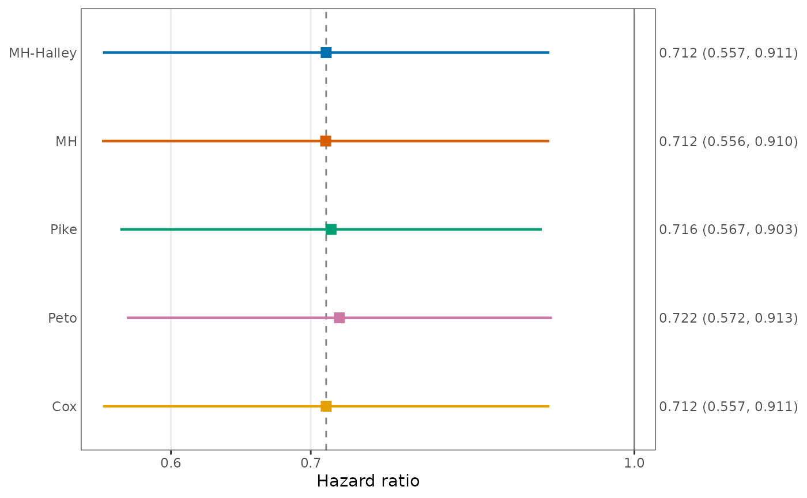
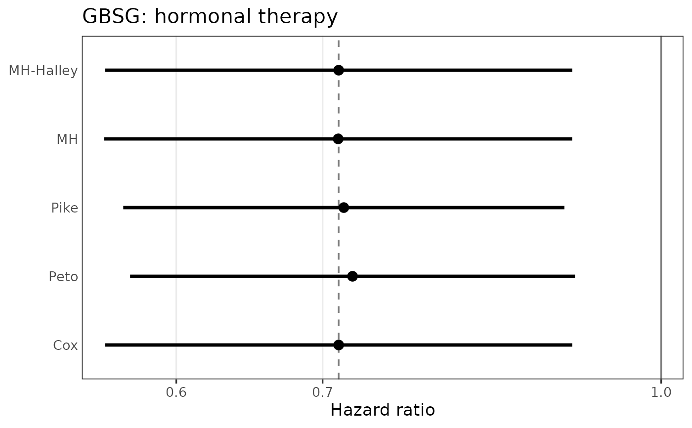
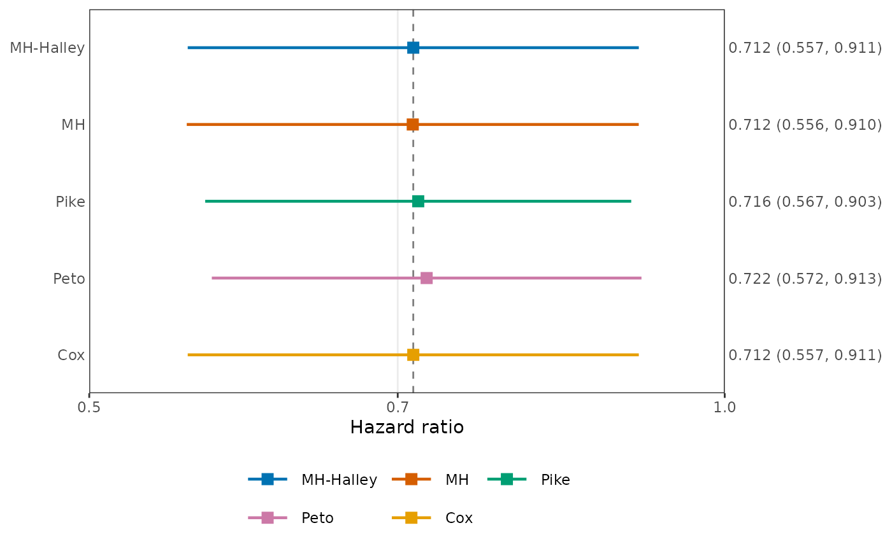
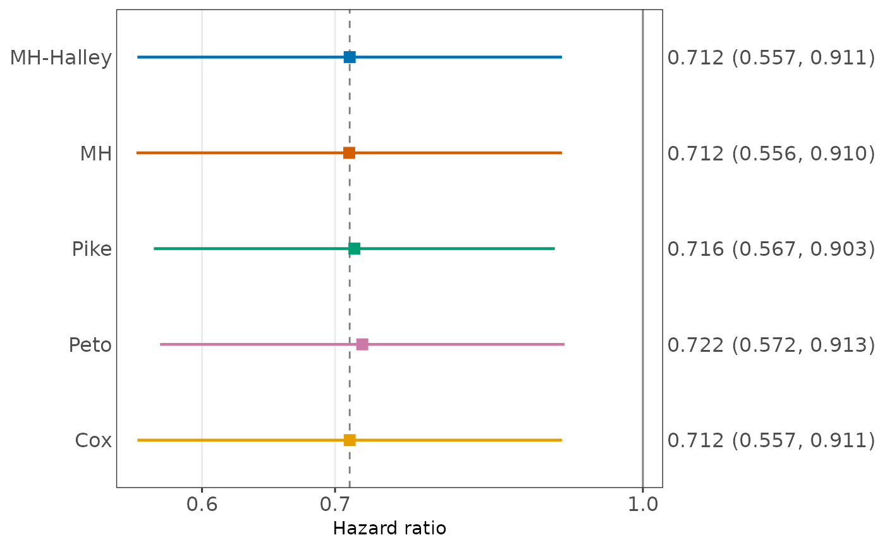

Draws a forest plot of the estimates of EstHR with
ggplot2: for each method, the hazard ratio (point) and its
confidence interval (segment) on a logarithmic axis, with the methods from
top to bottom in the order of method. Vertical reference lines mark
the hazard ratio 1 and, when a Cox method is among the methods, the Cox
estimate. The estimate and interval of each method are written on the
right axis.
Usage
# S3 method for class 'EstHR'
plot(
x,
labels = NULL,
col = NULL,
shape = 15,
size = 3,
linetype = 1,
linewidth = 0.8,
base_size = 11,
show_values = TRUE,
value_digits = 3L,
ref_lines = TRUE,
ref_col = "grey50",
legend_pos = "none",
legend_ncol = NULL,
xlab = "Hazard ratio",
main = NULL,
xlim = NULL,
...
)Arguments
- x
An object of class
"EstHR"returned byEstHR().- labels
Labels of the methods on the vertical axis and in the legend, one per method. Default
NULL: the names of the methods with underscores replaced by hyphens, such as"MH-Halley".- col
Colors of the methods, recycled. Default
NULL(the Okabe-Ito palette).- shape
Point shapes of the methods, with the numbers of
pchof base graphics, recycled. Default 15 (filled square).- size
Size of the points. Default 3.
- linetype
Line types of the interval segments, recycled. Default 1 (solid).
- linewidth
Width of the interval segments. Default 0.8.
- base_size
Base font size in points, as in
ggplot2::theme_bw(). Default 11.- show_values
Logical. Write the hazard ratio and the confidence limits on the right axis. Default
TRUE.- value_digits
Number of significant digits of the values on the right axis. Default 3.
- ref_lines
Logical. Draw the reference lines at the hazard ratio 1 (solid) and at the Cox estimate (dashed; from
"Cox", or"Cox_NR"without"Cox"). DefaultTRUE.- ref_col
Color of the reference lines. Default
"grey50".- legend_pos
Position of a legend of the methods:
"none"(default, as the methods label the vertical axis),"bottom","top","right", or"left"(outside the plot panel), or a numeric vectorc(x, y)with elements between 0 and 1 for a position inside the panel (c(1, 1)is the top right corner).- legend_ncol
Number of columns of the legend, filled row by row in the order of the methods. Default
NULL: at most 3 for a legend at the bottom or top, and 1 otherwise.- xlab, main
Axis title and main title.
- xlim
Limits of the horizontal axis (hazard ratio), two increasing positive numbers. Default
NULL: the range of the estimates, the intervals, and the reference line at 1, widened by 4 percent on the logarithmic scale. Intervals beyond the limits are cut at the edge of the panel.- ...
Not used.
Value
A ggplot object. It is drawn when it is printed, which
happens automatically at the top level; inside functions and loops, call
print() or save it with ggplot2::ggsave(). It can be
modified further with ggplot2, for example by adding
ggplot2::theme().
Examples
est <- EstHR(Surv(rfstime, status) ~ hormon + strata(grade),
data = survival::gbsg,
method = c("MH_Halley", "MH", "Pike", "Peto", "Cox"))
plot(est)

plot(est, col = "black", shape = 19, linewidth = 1.2, base_size = 13,
main = "GBSG: hormonal therapy", show_values = FALSE)

plot(est, legend_pos = "bottom", xlim = c(0.5, 1))

# Further changes with ggplot2
plot(est) + ggplot2::theme(axis.text = ggplot2::element_text(size = 12))
